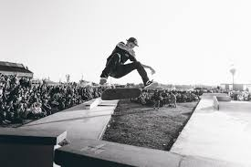

Cadu sempre sonhou em transformar sua paixão pelo skate em algo maior. Aos 17 anos, ele pegava madeiras velhas e montava seus próprios shapes no quintal de casa. Os amigos começaram a pedir, e logo o nome ‘Cadu Skate’ se espalhou pelo bairro. Hoje, a marca representa atitude, liberdade e respeito às raízes do skate de rua, com produtos feitos por quem vive sobre rodas. Cadu Skate — feita na rua, pra quem é da rua.
